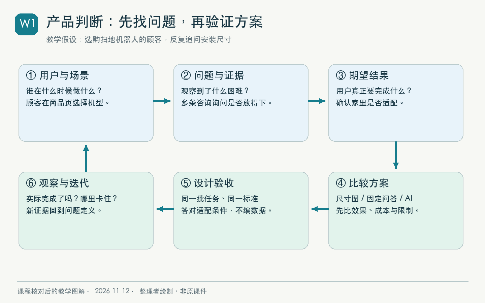

MAP / 先看完整路径
怎样使用
先顺着 1 → 6 看流程，再点击任意步骤进入演示。每步同时看“做什么、留下什么、容易错在哪里、怎样验收”。
实际项目里，这些步骤经常来回往返，不必死板按顺序走。页面里的案例都是虚构的教学示例。

图解为学习示意。
完整实操 SOP
可以用键盘左右方向键前后切换，也可以点左侧的步骤直接跳过去。
CHECK / 先判断，再看解释
已统计全部支付订单，还要乘复购率吗？
带走一张实操卡
内容只在当前页，刷新不保存；下载不会提交给老师，也不会改写课程笔记。
ORAL NOTES / 主线外也要记
老师口头补充与游离知识点
- 第一周 N04-image58–69：某一因子增加的算术推演，不能忽略其他因子变化。
- 11/7 PM 01:56:14–01:58:30：数、问、试都要核单位和人群。
- 11/15长录音02:17:04—02:19:19：老师追问复杂任务怎样算完成，课堂尚要求继续确认。动态示例明确写出自定验收，不把同学回答当定论。
- 11/15长录音02:24:24—02:32:06：从场景与目标拆指标；同时看使用覆盖、稳定性、有效产出和成本。规划模型和重试的消耗也要计入。层级数量不机械限定。
- 11/15长录音03:15:35—03:18:06：AI容易越拆越细，拆到足以支持判断就应收束；课堂120分钟以1.5倍速播放应为80分钟，不是90分钟。
- 11/15图94—95：发起后失败仍可算“使用过”；finish包括失败、超时和取消，不等于成功。是否能只用finish算率，要先验证终态是否齐全。
- 11/15长录音03:33:17—03:35:04、03:50:38—03:52:10：指标文档列清已埋事件，避免重复建设；新功能补所需事件，旧事件语义或触发变化仍要复核，不能理解成永远只埋一次。
- 11/15长录音03:45:47—03:50:28：课堂要求先做指标文档，不是看板。注册量不能单独证明价值；赠送积分应联看真实使用、留存和成本。案例损失金额未独立核验，不作行业基准。
- 2026-11-15 指标体系与产品决策：00:00—00:12:16 / 不把老师或AI当绝对权威；招聘看能否把事情做出来 / 用证据判断，不把讲师经历与薪资宣传当行业规律
- 2026-11-15 指标体系与产品决策：00:12:16—00:18:57 / 围绕JD梳理能力；让AI先帮分析再输出 / JD是职位要求；先列真实证据和缺口，再写表达，别补造年限
- 2026-11-15 指标体系与产品决策：00:18:57—00:22:32 / 用AI帮助思考，不能只照读答案 / “80/20”是讲师建议，不是经验证的固定比例
- 2026-11-15 指标体系与产品决策：00:22:32—00:29左右 / 框架与模型工具选择 / 框架为问题服务；品牌优劣、必须购买等个人判断未核，不转为购置任务
- 2026-11-15 指标体系与产品决策：00:29—00:38:50 / 同一真实项目可回答不同面试问题；关键词练表达 / 先理解事实再脱稿复述，详见面试笔记；不背一套万能答案
- 2026-11-15 指标体系与产品决策：00:38:50—00:48:38 / 一手材料与二手总结、讨论中的条件判断 / 根据任务交叉使用；不能把“有条件地判断”变成回避明确问题
- 2026-11-15 指标体系与产品决策：00:48:39—00:53左右 / 模拟面试暴露知识缺口 / 记录问题→缺能力→下一次练习，不套“几场后必过”的承诺
- 2026-11-15 指标体系与产品决策：01:01:56—01:03左右 / 商业指标外还要看用户体验 / 体验可作制衡指标；课堂企业历史未经独立核实
- 2026-11-15 指标体系与产品决策：01:08:34—01:19:19 / AI能力之外，还有部署和上手门槛 / “把环境准备好再交用户”是产品思路；不把未实践的面试设想当落地经验
- 2026-11-15 指标体系与产品决策：01:19:54—01:23:41 / 实践中知识可能逐渐贯通 / 转为小任务验证；不采纳“入职可闲置几个月”或快速跳槽叙事为规则
- 2026-11-15 指标体系与产品决策：01:28:06—01:34:40 / 从数据到业务动作 / 热销先核缺货风险；低销量先查原因，不能直接降价/减产
- 2026-11-15 指标体系与产品决策：01:37:33—01:38:59 / 提炼精确关键词；度、率、比帮助识别指标 / 命名不是定义，订单量、时长也可以是指标
- 2026-11-15 指标体系与产品决策：01:52:09—01:53:44 / 产品经理可以自定义指标 / 自定义必须可算、可解释、稳定；不能为好看随意改分母
- 2026-11-15 指标体系与产品决策：02:00:33—02:02:48 / 活跃可以分轻度与深度 / 按核心任务分层，别把小众功能使用当唯一深度标准
- 2026-11-15 指标体系与产品决策：02:06左右—02:12:42 / 曝光、引导、签到可能改变使用与留存 / 都是候选动作；签到提升打开不一定提升真实价值，前后变化也不能单独证明因果
- 2026-11-15 指标体系与产品决策：02:12:42—02:17:27 / 数据→发现问题→动作→验证；回应用户应有取舍 / “父系/母系”是课堂比喻，非正式产品分类；不必记品牌标签
- 2026-11-15 指标体系与产品决策：02:17:27—02:19:59 / 入职学习、用AI试错 / 仅保留在授权环境学习与验证；不采纳虚构履历、取走公司资料等说法为操作建议
- 2026-11-15 指标体系与产品决策：00:00—00:02:14 / 下次模拟面试与本次录音比较表达、技术判断、业务熟悉度等 / 看可观察改变；下一次日期未给，点名音近处待核
- 2026-11-15 指标体系与产品决策：00:02:50—00:30:20 / 业务不懂就继续追到用户、价值、流程和卡点；讲给陌生面试官听 / 不默认对方了解行业，抽象后要回到具体行动
- 2026-11-15 指标体系与产品决策：00:20—00:23 / 迭代已有产品也需要找流程卡点 / “明年0到1机会几乎为零”是未经核实预测，不记成行业事实
- 2026-11-15 指标体系与产品决策：00:32—00:39 / 从桌宠交互到模型、视觉、语音逐层动手，形成体感 / 录音把语音播报/音色与ASR混说；播报通常对应TTS文本转语音，ASR是语音识别转文字
- 2026-11-15 指标体系与产品决策：00:46左右 / 把老师、同学和业务方当可请教资源 / 可交流取证，不将班级分组当产品组织事实
- 2026-11-15 指标体系与产品决策：01:10—01:19 / 曝光有线上线下多种触点，流程中的奖励可影响行为 / 不采纳误导点击/制造紧迫感为默认策略；奖励引来的人未必真正使用
- 2026-11-15 指标体系与产品决策：01:30—01:38 / 介绍增长、旅程、目标拆解框架 / 图66/68/82现已确认AARRR、UJM、OSM名称；框架名仍不能代替实际定义
- 2026-11-15 指标体系与产品决策：02:14—02:20 / 目标随产品阶段调整；复杂任务要先定义成功 / 子任务完成比例和整个任务完成率分开
- 2026-11-15 指标体系与产品决策：02:20:40—02:24:20 / 累计注册量与日活不是一回事；工具按需用 / 5%—15%与后段10%—15%口述不一致且无样本，不当行业基准；同一去重体系下注册用户和活跃用户并非完全无关
- 2026-11-15 指标体系与产品决策：02:24—02:36 / 创作工具须看有效交付、返工、所有模型调用成本 / 用于定义自己的指标，不能照抄他公司数字
- 2026-11-15 指标体系与产品决策：02:36:30—02:43:56 / 分享前先讲背景；陪伴产品不只测“弹出一条回复” / 先解释核心用户任务，聊天轮次不是普适价值指标
- 2026-11-15 指标体系与产品决策：02:44—02:56 / 看板对比与使用下降归因 / 周期、任务量、收费、埋点与质量都需查，不能单凭曲线给公司下结论
- 2026-11-15 指标体系与产品决策：02:55:50—02:56:50 / 用配送/好评例子说明不同观测节点 / 企业历史与竞争结果未核；更深的步骤不自动更真实，也可能有选择偏差
- 2026-11-15 指标体系与产品决策：03:15:35—03:18:06 / 指标不用无限拆；看完两部剧改成更早的观测节点 / 深度与可观测性取舍；120分钟按1.5倍速是80分钟，原口述90分钟算术不准
- 2026-11-15 指标体系与产品决策：03:18—03:19:30 / 付费节点会影响转化 / 只保留节点设计与用户体验的关系；不记录露骨案例和私人闲聊，不泛化所有海外产品
- 2026-11-15 指标体系与产品决策：03:22:05—03:25:42 / AI产品也要做需求、业务、评测，需理解模型能力边界 / “面试没过15分钟就只因业务差”“传统产品不用模型”均过度绝对，不采纳
- 2026-11-15 指标体系与产品决策：03:26:29—03:32:20 / 首反馈、完整耗时、失败解释都影响体验 / TTFT不等于全程；502不等于违规；详见§10.5
- 2026-11-15 指标体系与产品决策：03:33—03:36 / 指标文档登记已有埋点，避免重复和口径冲突 / 不是全部交给AI就完成；仍要验实际记录
- 2026-11-15 指标体系与产品决策：03:40:37—03:43:40 / 单个功能也值得细拆，范围决定层级 / 功能留存与产品留存分开；“80%增长归我”须证明，不能写成成绩
- 2026-11-15 指标体系与产品决策：03:45:47—03:46:37 / 作业交文档，不要求做看板；原看板为公司内部材料 / 本轮只整理可得录音，不索取或发布公司后台
- 2026-11-15 指标体系与产品决策：03:46:55—03:50:28 / 赠送积分可能引来批量注册和成本风险；计费要跨职能核对 / 3万账号/40万亏损等为讲师轶事未核。提炼账户去重、额度/费用监测与职责核对，不保留甩锅建议
- 2026-11-15 指标体系与产品决策：03:50:38—03:52:10 / 按业务需要新增埋点，核已有事件 / 旧事件改变也需维护；全收并非无数据，而是可能难用
括号里是课程日期和录音时间点，方便回去查原话。内容是按录音整理的要点，不是逐字原话。
来源与公开范围
公开版来源与阅读边界 ↗公开版来源与阅读边界 ↗公开版来源与阅读边界 ↗本页把课程内容按操作步骤重新组织。想看课堂上的完整语境，请看按日期整理的笔记。课程里的观点不等于已核实的事实；涉及平台规则和参数的，用之前再查一遍。